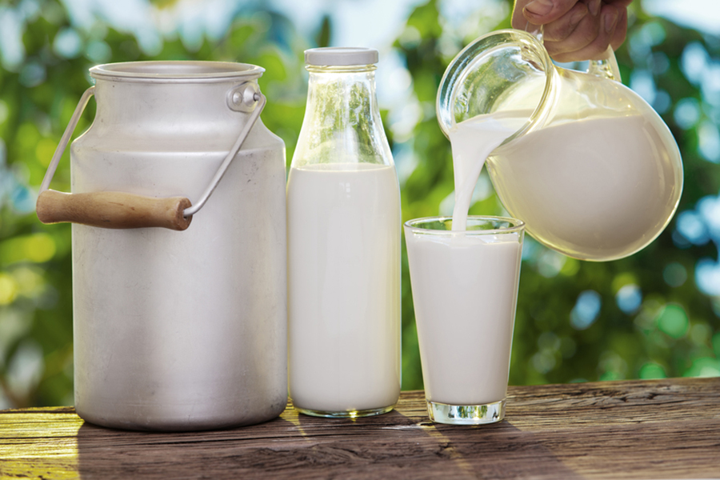

Почти все о молоке


По материалам книги Эдуарда Николаевича Алькаева
"Блюда из молока и молочных продуктов. "
А также из других источников Интернет
Уважаемый Читатель - после ознакомления с Книгой
рекомендую Вам заказать ее бумажное издание.
"Блюда из молока и молочных продуктов. "
А также из других источников Интернет
Уважаемый Читатель - после ознакомления с Книгой
рекомендую Вам заказать ее бумажное издание.
Молоко, сметана, сливочное масло, творог, кефир, простокваша входят в меню каждого человека. Это не только ценные пищевые продукты, но и лечебные средства, полезные при истощении, малокровии, болезнях печени, почек, атеросклерозе и гипертонии. Из этой уникальной книги вы почерпнете массу полезных сведений о молочных продуктах и узнаете, как приготовить из них супы и салаты, каши и пудинги, кисели и кремы, мороженое и напитки.
Кроме полной информации о коровьем молоке приводится краткий обзор свойств и особенностей молока других животных.
- Что такое коровье молоко.
- Виды молока.
- Способы обработки молока.
- Полезные свойства молока.
- О молоке и молочных продуктах .
- Хранение свежего молока.
- Питьевое молоко.
- Моменты истории и тайны молока.
- Молочнокислые продукты.
- Молоко и дети.
- Несколько слов о сметане и твороге.
- Кое-что о сыре и масле.
- Кто не любит мороженое?!.
- Молочные супы.
- Молочные каши.
- Молочные напитки.
- Блюда с использованием молока.
- Молочные соусы.
- Кисло-молочные продукты.
- Блюда с использованием кисло-молочных продуктов.
- Сливки.
- Блюда с использованием сливок.
- Сметана.
- Блюда с использованием сметаны.
- Салаты со сметаной.
- Творог.
- Блюда с творогом.
- Сливочное масло.
- Масляные смеси и пасты к бутербродам.
- Блюда с использованием молока.
- Сыр.
- Закуски с сыром.
- Блюда с сыром.
- Мороженое.
- Шербеты.
- Айс-Кримы.
- Санди.
- Парфеты.
- Молочные консерванты.
- Лечебные свойства молока.
- Лечение молоком.
- Как подделывают молоко.
- Ода грудному молоку.
- Когда молоко бывает вредным.
- Немного о молоке других животных.
- Состав молока различных животных.
- Козье молоко.
- Овечье молоко.
- Кобылье молоко.
- Ослиное молоко.
- Буйволиное молоко.
- Верблюжье молоко.
- Молоко зебу.
- Молоко самки яка.
- Оленье молоко.
- Молоко свиньи.
- Лосиное молоко.
- Молоко самки кита.
- Разное о молоке.